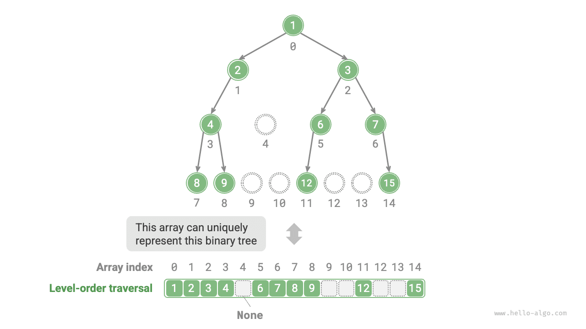

الأشجار
التمثيل المصفوفي للأشجار الثنائية
في تمثيل القوائم المترابطة، وحدة تخزين الشجرة الثنائية هي عقدة TreeNode، وتُربَط العقد بمؤشرات. وقد قدّم القسم السابق العمليات الأساسية للأشجار الثنائية في هذا التمثيل.
فهل يمكننا استخدام مصفوفة لتمثيل شجرة ثنائية؟ الجواب نعم.
تمثيل الأشجار الثنائية التامة
لنحلّل أولاً حالة بسيطة. بمعطى شجرة ثنائية تامة (perfect binary tree)، نخزّن جميع العقد في مصفوفة وفق ترتيب الاجتياز بالمستويات، حيث يقابل كل عقدة فهرس فريد في المصفوفة.
واستناداً إلى خصائص الاجتياز بالمستويات، يمكننا استنتاج "صيغة تعيين" بين فهرس العقدة الأب وفهرسي العقدتين الابنتين: إذا كان فهرس عقدة ما $i$، فإن فهرس ابنها الأيسر هو $2i + 1$ وفهرس ابنها الأيمن هو $2i + 2$. ويوضح الشكل أدناه علاقات التعيين بين فهارس العقد المختلفة.

تؤدي صيغة التعيين دوراً مشابهاً لدور مراجع العقد (المؤشرات) في القوائم المترابطة. فبمعطى أي عقدة في المصفوفة، يمكننا الوصول إلى عقدة ابنها الأيسر (الأيمن) باستخدام صيغة التعيين.
تمثيل أي شجرة ثنائية
الأشجار الثنائية التامة حالة خاصة؛ إذ توجد عادةً في المستويات الوسطى من الشجرة الثنائية قيم None كثيرة. ولأن تسلسل الاجتياز بالمستويات لا يتضمن قيم None هذه، لا يمكننا استنتاج عدد قيم None وتوزيعها اعتماداً على هذا التسلسل وحده. وهذا يعني أن بنى أشجار ثنائية متعددة يمكن أن تقابل تسلسل الاجتياز بالمستويات نفسه.
وكما يوضح الشكل أدناه، بمعطى شجرة ثنائية غير تامة، تفشل طريقة التمثيل المصفوفي أعلاه.

لحل هذه المشكلة، يمكننا كتابة جميع قيم None صراحةً في تسلسل الاجتياز بالمستويات. وكما يوضح الشكل أدناه، بمجرد فعل ذلك، يستطيع تسلسل الاجتياز بالمستويات تمثيل شجرة ثنائية تمثيلاً فريداً. والشيفرة المثالية كما يلي:
Go
/* التمثيل المصفوفي لشجرة ثنائية */
// استخدام شريحة من النوع any، بما يسمح باستخدام nil لتعليم المواضع الفارغة
tree := []any{1, 2, 3, 4, nil, 6, 7, 8, 9, nil, nil, 12, nil, nil, 15}
TypeScript
/* التمثيل المصفوفي لشجرة ثنائية */
// استخدام null لتمثيل المواضع الفارغة
let tree: (number | null)[] = [1, 2, 3, 4, null, 6, 7, 8, 9, null, null, 12, null, null, 15];

جدير بالذكر أن الأشجار الثنائية الكاملة ملائمة جداً للتمثيل المصفوفي. وباستذكار تعريف الشجرة الثنائية الكاملة، لا تظهر None إلا في المستوى السفلي وفي الجهة اليمنى، ما يعني أن جميع قيم None يجب أن تظهر في نهاية تسلسل الاجتياز بالمستويات.
وهذا يعني أنه عند استخدام مصفوفة لتمثيل شجرة ثنائية كاملة، يمكن إغفال تخزين جميع قيم None، وهو أمر مريح للغاية. ويقدّم الشكل أدناه مثالاً على ذلك.

تُنفِّذ الشيفرة التالية شجرة ثنائية باستخدام التمثيل المصفوفي، وتشمل العمليات التالية:
- بمعطى عقدة، الحصول على قيمتها، وعلى عقدة ابنها الأيسر (الأيمن)، وعلى العقدة الأب.
- الحصول على تسلسلات الاجتياز المسبق والوسطي واللاحق وبالمستويات.
TypeScript
/* صنف الشجرة الثنائية الممثلة بالمصفوفة */
class ArrayBinaryTree {
#tree: (number | null)[];
/* الباني */
constructor(arr: (number | null)[]) {
this.#tree = arr;
}
/* سعة القائمة */
size(): number {
return this.#tree.length;
}
/* احصل على قيمة العقدة عند الفهرس i */
val(i: number): number | null {
// إذا خرج الفهرس عن الحدود، أعد null لتمثيل موضع فارغ
if (i < 0 || i >= this.size()) return null;
return this.#tree[i];
}
/* احصل على فهرس عقدة الابن الأيسر للعقدة عند الفهرس i */
left(i: number): number {
return 2 * i + 1;
}
/* احصل على فهرس عقدة الابن الأيمن للعقدة عند الفهرس i */
right(i: number): number {
return 2 * i + 2;
}
/* احصل على فهرس العقدة الأب للعقدة عند الفهرس i */
parent(i: number): number {
return Math.floor((i - 1) / 2); // قسمة بتقريب للأسفل
}
/* الاجتياز بالمستويات */
levelOrder(): number[] {
let res = [];
// اجتَز المصفوفة مباشرة
for (let i = 0; i < this.size(); i++) {
if (this.val(i) !== null) res.push(this.val(i));
}
return res;
}
/* الاجتياز بالعمق أولاً */
#dfs(i: number, order: Order, res: (number | null)[]): void {
// إذا كان الموضع فارغاً، عُد
if (this.val(i) === null) return;
// الاجتياز المسبق
if (order === 'pre') res.push(this.val(i));
this.#dfs(this.left(i), order, res);
// الاجتياز الوسطي
if (order === 'in') res.push(this.val(i));
this.#dfs(this.right(i), order, res);
// الاجتياز اللاحق
if (order === 'post') res.push(this.val(i));
}
/* الاجتياز المسبق */
preOrder(): (number | null)[] {
const res = [];
this.#dfs(0, 'pre', res);
return res;
}
/* الاجتياز الوسطي */
inOrder(): (number | null)[] {
const res = [];
this.#dfs(0, 'in', res);
return res;
}
/* الاجتياز اللاحق */
postOrder(): (number | null)[] {
const res = [];
this.#dfs(0, 'post', res);
return res;
}
}
المزايا والقيود
يتمتع التمثيل المصفوفي للأشجار الثنائية بالمزايا التالية:
- تُخزَّن المصفوفات في مساحة ذاكرة متجاورة، وهو ما يلائم ذاكرة التخزين المؤقت (cache) ويتيح وصولاً واجتيازاً أسرع.
- لا يتطلب تخزين مؤشرات، وهو ما يوفّر المساحة.
- يتيح الوصول العشوائي إلى العقد.
ومع ذلك، فإن التمثيل المصفوفي له أيضاً بعض القيود:
- يتطلب التخزين المصفوفي مساحة ذاكرة متجاورة، لذا فهو غير مناسب لتخزين أشجار ذات كمية كبيرة من البيانات.
- تتطلب إضافة العقد أو إزالتها عمليات إدراج وحذف في المصفوفة، وهي عمليات أقل كفاءة.
- عندما تكثر قيم
Noneفي الشجرة الثنائية، تنخفض نسبة بيانات العقد التي تحتويها المصفوفة، مما يؤدي إلى انخفاض استخدام المساحة.